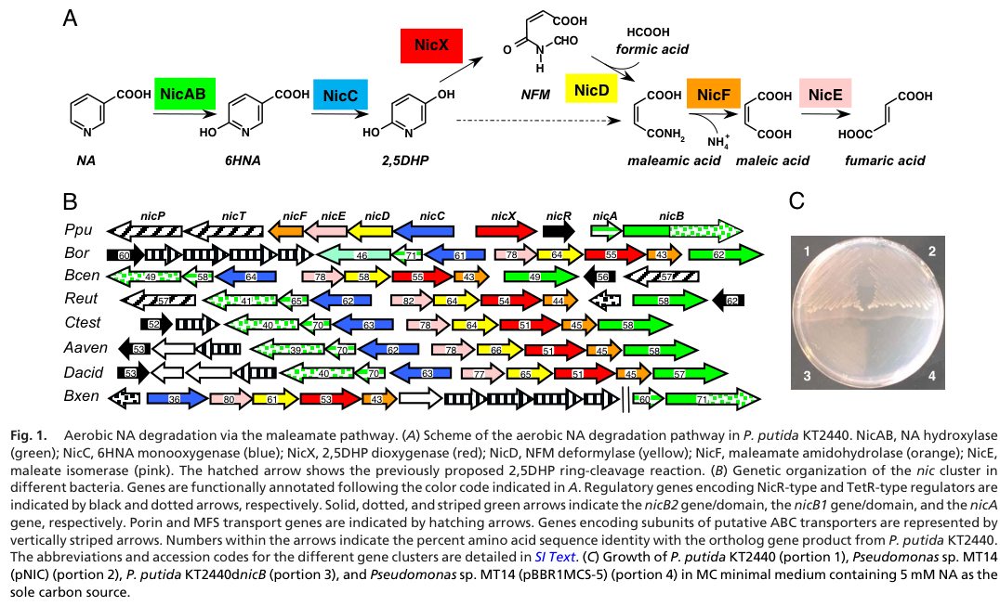

nicS (PP_3949, Q88FX7) encodes a TetR-like (HTH-type) DNA-binding transcriptional repressor that controls the nicAB operon in the aerobic nicotinate (nicotinic acid, NA) degradation regulon of Pseudomonas putida KT2440. NicS is one of two distinct repressors of the nic system; NicS represses the upstream nicAB NA-hydroxylase genes, while the MarR-type NicR represses the downstream nicC and nicX operons. NicS represses the Pa promoter under non-induced conditions, with repression relieved by the substrate nicotinate or the first pathway intermediate 6-hydroxynicotinate (6HNA) acting as effectors. NicS is a soluble, cytosolic regulator and not a catabolic enzyme.
| GO Term | Evidence | Action | Reason |
|---|---|---|---|
|
GO:0003677
DNA binding
|
IEA
GO_REF:0000002 |
KEEP AS NON CORE |
Summary: DNA binding is consistent with the HTH transcriptional repressor assignment, but it is less informative than the specific repressor activity. Falcon deep research confirms NicS is a soluble DNA-binding transcription factor that binds operator DNA in the nicAB promoter region.
Reason: NicS is a DNA-binding transcriptional regulator; the binding parent term is retained as background rather than the core function.
Supporting Evidence:
file:PSEPK/nicS/nicS-uniprot.txt
Transcriptional repressor for the nicAB operon
file:PSEPK/nicS/nicS-goa.tsv
GO:0003677 DNA binding
file:PSEPK/nicS/nicS-deep-research-falcon.md
NicS is a **soluble DNA-binding transcription factor**, therefore expected to localize to the **cytosol/nucleoid region**
|
|
GO:0003700
DNA-binding transcription factor activity
|
IEA
GO_REF:0000002 |
MODIFY |
Summary: The transcription-factor annotation is directionally correct but should be refined to repressor activity for NicS. UniProt, the nic regulatory paper, and falcon deep research all identify NicS specifically as a repressor of the nicAB Pa promoter, not a generic transcription factor.
Reason: UniProt and the nic regulatory paper identify NicS as a repressor of the nicAB Pa promoter, and falcon deep research independently confirms NicS represses nicAB, so GO:0001217 (DNA-binding transcription repressor activity) is more specific than generic DNA-binding transcription factor activity.
Proposed replacements:
DNA-binding transcription repressor activity
Supporting Evidence:
file:PSEPK/nicS/nicS-uniprot.txt
Transcriptional repressor for the nicAB operon
PMID:21450002
encodes a TetR-like regulator that
file:PSEPK/nicS/nicS-deep-research-falcon.md
**NicS represses nicAB**, while **NicR represses nicC and nicX** operons
|
|
GO:0006355
regulation of DNA-templated transcription
|
IEA
GO_REF:0000002 |
MODIFY |
Summary: Regulation of DNA-templated transcription is correct but too broad for NicS. NicS represses nicAB transcription in the absence of nicotinate or 6HNA, so negative regulation is the specific process.
Reason: NicS represses nicAB transcription in the absence of nicotinate or 6-hydroxynicotinate, so negative regulation of DNA-templated transcription is the better process term. Falcon deep research reinforces that NicS gates expression of the upstream NA-hydroxylation step and that repression is relieved by NA and/or 6HNA effectors.
Proposed replacements:
negative regulation of DNA-templated transcription
Supporting Evidence:
file:PSEPK/nicS/nicS-uniprot.txt
repression of the nicAB operon becomes alleviated in
PMID:21450002
represses the activity of Pa in the absence of the NA/6HNA inducers
file:PSEPK/nicS/nicS-deep-research-falcon.md
it is a **transcriptional regulator** that gates expression of the upstream NA hydroxylation step
|
Q: Does NicS directly bind additional promoters beyond Pa in the KT2440 nicotinate regulon?
Q: Which effector (nicotinate vs 6-hydroxynicotinate) is the primary physiological ligand that allosterically derepresses NicS at the nicAB promoter?
Experiment: Map NicS binding sites by EMSA or DNase footprinting across nicAB, nicCDEFTP, nicXR, and nicS promoter regions with and without nicotinate or 6-hydroxynicotinate.
Type: DNA-binding and transcription reporter assay
Experiment: Determine the NicS allosteric effector by ITC/fluorescence titration of purified NicS with nicotinate and 6HNA, and test whether ligand binding reduces operator DNA affinity (as shown for homologous TetR/MarR nic repressors).
Type: Ligand-binding and allostery assay
The research report should be a detailed narrative explaining the function, biological processes, and localization of the gene product. Citations should be given for all claims.
You should prioritize authoritative reviews and primary scientific literature when conducting research. You can supplement
this with annotations you find in gene/protein databases, but these can be outdated or inaccurate.
We are specifically interested in the primary function of the gene - for enzymes, what reaction is catalyzed, and what is the substrate specificity? For transporters, what is the substrate? For structural proteins or adapters, what is the broader structural role? For signaling molecules, what is the role in the pathway.
We are interested in where in or outside the cell the gene product carries out its function.
We are also interested in the signaling or biochemical pathways in which the gene functions. We are less interested in broad pleiotropic effects, except where these elucidate the precise role.
Include evidence where possible. We are interested in both experimental evidence as well as inference from structure, evolution, or bioinformatic analysis. Precise studies should be prioritized over high-throughput, where available.
The target protein specified by UniProt accession Q88FX7 is annotated as an HTH-type transcriptional repressor NicS (also described as “nicotinate degradation protein S”) encoded by nicS with ordered locus name PP_3949 in Pseudomonas putida strain KT2440 (ATCC 47054 / DSM 6125) (user-provided UniProt context). In the retrieved scientific literature discussing P. putida KT2440 nicotinate (nicotinic acid, NA) catabolism, NicS consistently refers to a second transcriptional repressor distinct from NicR, with a split regulatory architecture in which NicS represses nicAB (the NA hydroxylase genes), while NicR represses downstream operons (nicC and nicX). (das2023nicotinicacidcatabolism pages 1-2, brickman2018thebordetellabronchiseptica pages 1-2)
Aerobic NA degradation in P. putida KT2440 is a well-studied model for microbial catabolism of N-heterocyclic aromatic compounds and proceeds via the maleamate pathway, producing fumarate (a TCA cycle intermediate). The core pathway chemistry includes NA hydroxylation to 6-hydroxynicotinic acid (6HNA), oxidative decarboxylation to 2,5-dihydroxypyridine (2,5DHP), ring cleavage to N-formylmaleamic acid (NFM), and subsequent steps to maleamate/maleate/fumarate. (jimenez2008decipheringthegenetic pages 1-2, jimenez2008decipheringthegenetic pages 2-3)
A key organizing concept for functional annotation is that NicS is not a catabolic enzyme; rather, it is a transcriptional regulator that gates expression of the upstream NA hydroxylation step, thereby coordinating pathway induction with substrate availability and (likely) intracellular pyridine/NAD-related homeostasis. (das2023nicotinicacidcatabolism pages 1-2, brickman2018thebordetellabronchiseptica pages 1-2)
A seminal study defined and experimentally validated the P. putida KT2440 nic gene cluster responsible for aerobic NA degradation (gene set commonly presented as nicTPFEDCXRAB). Knockouts of multiple genes in this cluster (e.g., nicA, nicB, nicC, nicD, nicX) abolished growth on NA, and complementation restored NA utilization. (jimenez2008decipheringthegenetic pages 1-2, jimenez2008decipheringthegenetic pages 2-3)
Figure support: The pathway and cluster organization (including regulatory genes) are summarized in a canonical schematic (Figure 1) showing the maleamate pathway chemistry and the nic cluster gene order, including a NicR-type regulator and a TetR-type regulator within/adjacent to nic loci across bacteria. (jimenez2008decipheringthegenetic media 270ed9f5)
These data establish that the nic system is a complete catabolic module that can be moved into heterologous Pseudomonas hosts (e.g., plasmid-borne cluster confers NA utilization). (jimenez2008decipheringthegenetic pages 2-3)
Across the retrieved literature, NicS is described as a transcriptional repressor involved in controlling NA catabolism genes in P. putida KT2440. A recent 2023 synthesis explicitly states a division of labor between repressors: NicS represses nicAB, while NicR represses nicC and nicX operons. (das2023nicotinicacidcatabolism pages 1-2)
An authoritative comparative discussion of the P. putida regulatory circuit reports two distinct repressors (NicS and NicR) whose repressor functions are inhibited by the substrate nicotinate (NA) and/or the first pathway intermediate 6HNA. (brickman2018thebordetellabronchiseptica pages 1-2)
Because UniProt/InterPro (user-provided) annotate Q88FX7 as a TetR-like HTH regulator with a C-terminal ligand-binding-like domain (NicS_C), the most defensible current model is that NicS functions analogously to other ligand-responsive HTH repressors: binding an operator site near the nicAB promoter to block transcription until NA/6HNA (or a related pyridine intermediate) accumulates, causing an allosteric change that reduces DNA-binding affinity.
The biological process is regulation of aerobic nicotinate degradation and coordination of entry into the maleamate pathway. The pathway converts NA to fumarate, enabling NA to serve as a carbon/nitrogen/energy source in KT2440. (jimenez2008decipheringthegenetic pages 1-2)
NicS is a soluble DNA-binding transcription factor, therefore expected to localize to the cytosol/nucleoid region rather than membranes or extracellular space. This is consistent with its predicted HTH transcription-regulator architecture and its regulatory role on chromosomal promoters (inference supported by multiple examples of similar repressors acting by promoter binding; see mechanistic section below). (hu2019regulatorymechanismof pages 2-4, hu2019regulatorymechanismof pages 1-2)
Direct biochemical/structural characterization for PP_3949/Q88FX7 NicS itself was not obtained in the retrieved full texts; therefore, mechanistic annotation benefits from structurally characterized analogs:
1) Ligand-controlled repression by 6HNA in a nic-cluster repressor (MarR family, Bordetella BpsR):
Crystal structures of BpsR and BpsR–6HNA show 6HNA binding induces a conformational change that prevents DNA binding, consistent with 6HNA acting as an allosteric derepressor. (Publication date: Nov 2019; URL: https://doi.org/10.1371/journal.pone.0223387). (booth2019structuralmechanismfor pages 1-2)
Reporter assays in Bordetella further support that 6HNA is the actual in vivo inducer of nic genes by preventing repressor-promoter binding. (Publication date: Jun 2018; URL: https://doi.org/10.1128/jb.00712-17). (guragain2018thetranscriptionalregulator pages 1-3)
While NicS is predicted TetR-like (not MarR-like), these studies provide strong support for the broader mechanistic principle that the first pathway intermediate (6HNA) can serve as the physiological inducer in nicotinate catabolism regulons.
2) TetR-family HTH repressor mechanics in Pseudomonas nicotine catabolism (NicR2):
A detailed mechanistic study of NicR2 (a TetR-family repressor in Pseudomonas putida nicotine catabolism) shows a canonical regulatory logic that is plausible for NicS: the repressor binds inverted repeat DNA sites that overlap the −35/−10 promoter elements, causing direct competition with RNA polymerase. (Publication date: Jun 2019; URL: https://doi.org/10.1128/mbio.00602-19). (hu2019regulatorymechanismof pages 1-2, hu2019regulatorymechanismof pages 2-4)
Crucially, NicR2 is controlled by small-molecule effectors (pathway intermediates) where a hydroxylated intermediate can act as an antagonist that locks a derepressing conformation and prevents reassociation with DNA, with quantitative differences in binding affinity depending on DNA-bound vs free repressor states (ITC-derived KD values reported in the text). (hu2019regulatorymechanismof pages 10-11)
These structural/biophysical features are directly relevant to annotating NicS because UniProt indicates NicS is a TetR-like HTH repressor, implying similar DNA-binding architecture and ligand-responsive allostery.
3) Recent (2023) TetR-family example of hydroxylated pyridine ligand dissociating DNA binding:
In nicotine catabolism of Sphingomonas, a TetR-family regulator (NdpR) is inhibited by 2,5-dihydroxypyridine, which prevents binding to multiple promoters. (Publication date: May 2023; URL: https://doi.org/10.1128/aem.00324-23). (wang2023regulationmechanismof pages 1-2, wang2023regulationmechanismof pages 8-10)
This reinforces a generalizable motif: hydroxylated pyridine intermediates are common effector ligands for repressors controlling pyridine catabolism.
Working model for NicS (PP_3949/Q88FX7): NicS likely binds operator DNA in the nicAB promoter region (or nearby) and represses transcription until NA oxidation begins; rising NA and/or 6HNA then reduces NicS DNA affinity (allosteric derepression), coordinating pathway entry with substrate availability and minimizing unnecessary expression burden. This model is consistent with the reported NicS/NicR dual repression architecture and the established ligand-derepression logic in nic regulons. (das2023nicotinicacidcatabolism pages 1-2, brickman2018thebordetellabronchiseptica pages 1-2, booth2019structuralmechanismfor pages 1-2)
A 2023 study analyzing nicotinate catabolism in Burkholderia gladioli (in the context of mycophagy) summarizes the P. putida KT2440 model and explicitly states that NicR represses nicC/nicX while NicS represses nicAB, highlighting a widely used conceptual framework for interpreting NA pool effects and catabolic regulation. (Publication date: Jun 2023; URL: https://doi.org/10.1128/spectrum.04457-22). (das2023nicotinicacidcatabolism pages 1-2)
Within the retrieved full texts, no 2024 primary paper directly characterizing NicS (PP_3949/Q88FX7) (e.g., operator mapping, ligand binding, structures) was obtained. Mechanistic insights therefore rely on (i) earlier KT2440 pathway genetics/biochemistry, (ii) 2018–2019 regulator mechanism studies in related systems, and (iii) 2023 mechanistic regulator work in other bacteria. (jimenez2008decipheringthegenetic pages 2-3, hu2019regulatorymechanismof pages 10-11, guragain2018thetranscriptionalregulator pages 1-3)
The KT2440 NA hydroxylase (NicAB) is explicitly described as being used in industry to form 6HNA, which is a key precursor of agrochemicals including insecticides and herbicides (examples named include imidacloprid and imazapyr). The paper emphasizes that cloning/heterologous expression of this enzyme is of biotechnological interest, including identifying suitable Pseudomonas expression hosts for enzymes requiring an unusual molybdenum cofactor. (Publication date: Aug 2008; URL: https://doi.org/10.1073/pnas.0802273105). (jimenez2008decipheringthegenetic pages 3-4)
The nicotinate pathway is framed as providing a framework for developing detoxification/biotransformation processes for N-heterocyclic aromatic pollutants and for producing valuable intermediates (6HNA, 2,5DHP) that can funnel degradation of toxic compounds such as nicotine and hydroxypyridines. (jimenez2008decipheringthegenetic pages 1-2)
The following table consolidates gene-level roles, evidence types, and key citations for NicS (Q88FX7/PP_3949) and the associated nicotinate degradation module.
| Gene/protein | Role | Evidence type (genetics/biochem/binding/structure/inference) | Key finding | Primary source (author year) | URL |
|---|---|---|---|---|---|
| NicS (Q88FX7 / PP_3949) | Predicted HTH-type TetR-like transcriptional repressor in the nic system; likely cytosolic DNA-binding regulator | Inference; comparative genetics | Direct primary literature on PP_3949/NicS in P. putida KT2440 is limited in the retrieved set. UniProt/InterPro description identifies an HTH TetR-like regulator with NicS_C domain; comparative pathway literature indicates NicS is the second repressor besides NicR and specifically represses nicAB in P. putida KT2440, consistent with a soluble transcription factor rather than a membrane/secreted protein (das2023nicotinicacidcatabolism pages 1-2, brickman2018thebordetellabronchiseptica pages 1-2) | Das 2023; Brickman & Armstrong 2018 | https://doi.org/10.1128/spectrum.04457-22 ; https://doi.org/10.1111/mmi.13943 |
| nicA | Small subunit of nicotinic acid hydroxylase (NicAB) | Genetics; biochemistry | Disruption of nicA abolishes growth on nicotinate (NA) but not on 6-hydroxynicotinate (6HNA); with nicB, encodes the first step converting NA → 6HNA (jimenez2008decipheringthegenetic pages 2-3, jimenez2008decipheringthegenetic pages 1-2) | Jiménez et al. 2008 | https://doi.org/10.1073/pnas.0802273105 |
| nicB | Large subunit of nicotinic acid hydroxylase (NicAB), containing unusual cytochrome c domain | Genetics; biochemistry; structural inference | NicB forms a two-component NA hydroxylase with NicA; the enzyme is highly specific for NA and has a distinctive electron transport chain including a cytochrome c domain, supporting aerobic NA → 6HNA conversion (jimenez2008decipheringthegenetic pages 2-3, jimenez2008decipheringthegenetic pages 3-4) | Jiménez et al. 2008 | https://doi.org/10.1073/pnas.0802273105 |
| nicC | 6-hydroxynicotinate 3-monooxygenase | Genetics; biochemistry | nicC encodes the enzyme for oxidative decarboxylation of 6HNA → 2,5-dihydroxypyridine (2,5DHP); mutant cells accumulate 6HNA and recombinant expression confirms activity (jimenez2008decipheringthegenetic pages 3-4) | Jiménez et al. 2008 | https://doi.org/10.1073/pnas.0802273105 |
| nicX | 2,5-dihydroxypyridine dioxygenase | Genetics; biochemistry; structural modeling | NicX catalyzes ring cleavage of 2,5DHP → N-formylmaleamic acid (NFM); purified enzyme is Fe²⁺-dependent and was proposed as founding member of a new extradiol dioxygenase family (jimenez2008decipheringthegenetic pages 4-5) | Jiménez et al. 2008 | https://doi.org/10.1073/pnas.0802273105 |
| nicD | N-formylmaleamate deformylase | Genetics; biochemistry; catalytic-site mutagenesis | NicD converts NFM → maleamate + formate; site-directed mutagenesis supported a catalytic triad-like mechanism within an α/β-hydrolase fold enzyme (jimenez2008decipheringthegenetic pages 5-6) | Jiménez et al. 2008 | https://doi.org/10.1073/pnas.0802273105 |
| nicF | Maleamate amidohydrolase | Biochemistry; inference from sequence family | Recombinant NicF shows maleamate amidohydrolase activity, converting maleamate → maleate + NH₄⁺ (jimenez2008decipheringthegenetic pages 5-6) | Jiménez et al. 2008 | https://doi.org/10.1073/pnas.0802273105 |
| nicE | Maleate isomerase | Sequence/function inference | nicE was assigned as the terminal pathway step, catalyzing maleate → fumarate, based on strong similarity to known maleate cis/trans-isomerases and conserved catalytic cysteines (jimenez2008decipheringthegenetic pages 5-6) | Jiménez et al. 2008 | https://doi.org/10.1073/pnas.0802273105 |
| nicP | Putative porin in nicotinate uptake | Genetics; inference | The nic cluster includes nicP, predicted to encode a porin involved in substrate uptake; no direct biochemical transport assay was captured in the retrieved evidence (jimenez2008decipheringthegenetic pages 1-2) | Jiménez et al. 2008 | https://doi.org/10.1073/pnas.0802273105 |
| nicT | Putative MFS permease in nicotinate uptake | Genetics; comparative genomics; inference | The nic cluster includes nicT, predicted to encode an MFS transporter for nicotinate-related uptake; orthologous clusters often retain MFS or ABC transport systems (jimenez2008decipheringthegenetic pages 5-6, jimenez2008decipheringthegenetic pages 1-2) | Jiménez et al. 2008 | https://doi.org/10.1073/pnas.0802273105 |
| nicR | MarR-type transcriptional repressor | Comparative genetics; transcriptomics; DNA binding | In P. putida KT2440, NicR represses the nicC and nicX operons; later work showed NicR directly binds both promoter regions and cooperates with FinR in NA/6HNA-responsive induction (xiao2018finrregulatesexpression pages 1-2, das2023nicotinicacidcatabolism pages 1-2) | Xiao et al. 2018; Das 2023 | https://doi.org/10.1128/AEM.01210-18 ; https://doi.org/10.1128/spectrum.04457-22 |
| FinR | Positive regulator cooperating with NicR in NA catabolism | Transcriptomics; genetics; direct DNA binding | Deleting finR decreased expression of nicC and nicX, impaired growth on NA or 6HNA as sole carbon sources, and in vitro assays showed FinR and NicR both bind the promoter regions directly (xiao2018finrregulatesexpression pages 1-2) | Xiao et al. 2018 | https://doi.org/10.1128/AEM.01210-18 |
| NicR + NicS regulatory split | Dual-repressor architecture of the nic system | Comparative genetics; pathway synthesis | Retrieved recent comparative literature states that in P. putida KT2440, NicR represses nicC/nicX while NicS represses nicAB, indicating regulatory separation of upstream NA hydroxylation from downstream catabolism (das2023nicotinicacidcatabolism pages 1-2) | Das 2023 | https://doi.org/10.1128/spectrum.04457-22 |
| NA / 6HNA as effectors | Pathway induction / relief of repression | Comparative genetics; ligand-response inference | Comparative literature summarizing P. putida reports that the two repressors NicS and NicR are inhibited by NA and/or 6HNA; in homologous Bordetella systems, 6HNA is the direct inducer that inhibits DNA binding of the cognate repressor (brickman2018thebordetellabronchiseptica pages 1-2, booth2019structuralmechanismfor pages 1-2) | Brickman & Armstrong 2018; Booth et al. 2019 | https://doi.org/10.1111/mmi.13943 ; https://doi.org/10.1371/journal.pone.0223387 |
| BpsR (Bordetella homolog) | Structural analog informing NicS/NicR-like ligand control | Structure; ligand binding; DNA-binding mechanism | Crystal structures of BpsR showed 6HNA binding induces a conformational change that prevents DNA binding, offering mechanistic support for 6HNA-responsive repression relief in homologous nicotinate regulators (booth2019structuralmechanismfor pages 1-2) | Booth et al. 2019 | https://doi.org/10.1371/journal.pone.0223387 |
| Biotechnological relevance of nic pathway | Catabolism of N-heterocycles; 6HNA production; chassis relevance | Review/analysis; primary biochemistry | The nic cluster enables aerobic nicotinate degradation to fumarate and provides enzymes for biotransformation of N-heterocyclic compounds; NA hydroxylase/6HNA production was explicitly noted as biotechnologically relevant, and KT2440 is highlighted as a robust metabolic chassis (jimenez2008decipheringthegenetic pages 1-2, jimenez2008decipheringthegenetic pages 3-4, belda2016therevisitedgenome pages 14-15) | Jiménez et al. 2008; Belda et al. 2016 | https://doi.org/10.1073/pnas.0802273105 ; https://doi.org/10.1111/1462-2920.13230 |
Table: This table summarizes the predicted function of NicS (Q88FX7/PP_3949), the experimentally supported steps of the nicotinate degradation pathway in Pseudomonas putida KT2440, and the currently known regulatory architecture involving NicR, NicS, FinR, and small-molecule effectors. It is useful as a compact evidence map linking genes, reactions, regulatory roles, and source citations.
High confidence exists for: (i) the biochemical steps and enzyme assignments of the KT2440 nic pathway; (ii) NicS being a transcriptional repressor in this pathway and acting alongside NicR; and (iii) the split regulation NicS→nicAB and NicR→nicC/nicX as stated in recent comparative synthesis. (das2023nicotinicacidcatabolism pages 1-2, jimenez2008decipheringthegenetic pages 1-2)
Moderate confidence exists for: the detailed molecular mechanism of NicS (operator sequence, oligomeric binding mode, and the specific physiological ligand), because direct NicS biochemical/structural experiments for PP_3949 were not captured in the retrieved texts; mechanistic statements are therefore presented as inference supported by structurally characterized homologous repressors and cross-species induction logic involving NA/6HNA. (brickman2018thebordetellabronchiseptica pages 1-2, hu2019regulatorymechanismof pages 10-11, booth2019structuralmechanismfor pages 1-2)
References
(das2023nicotinicacidcatabolism pages 1-2): Joyati Das, Rahul Kumar, Sunil Kumar Yadav, and Gopaljee Jha. Nicotinic acid catabolism modulates bacterial mycophagy in burkholderia gladioli strain ngj1. Jun 2023. URL: https://doi.org/10.1128/spectrum.04457-22, doi:10.1128/spectrum.04457-22. This article has 6 citations and is from a domain leading peer-reviewed journal.
(brickman2018thebordetellabronchiseptica pages 1-2): Timothy J. Brickman and Sandra K. Armstrong. The bordetella bronchiseptica nic locus encodes a nicotinic acid degradation pathway and the 6‐hydroxynicotinate‐responsive regulator bpsr. Molecular Microbiology, 108:397-409, May 2018. URL: https://doi.org/10.1111/mmi.13943, doi:10.1111/mmi.13943. This article has 13 citations and is from a domain leading peer-reviewed journal.
(jimenez2008decipheringthegenetic pages 1-2): José I. Jiménez, Ángeles Canales, Jesús Jiménez-Barbero, Krzysztof Ginalski, Leszek Rychlewski, José L. García, and Eduardo Díaz. Deciphering the genetic determinants for aerobic nicotinic acid degradation: the nic cluster from pseudomonas putida kt2440. Proceedings of the National Academy of Sciences, 105:11329-11334, Aug 2008. URL: https://doi.org/10.1073/pnas.0802273105, doi:10.1073/pnas.0802273105. This article has 173 citations and is from a highest quality peer-reviewed journal.
(jimenez2008decipheringthegenetic pages 2-3): José I. Jiménez, Ángeles Canales, Jesús Jiménez-Barbero, Krzysztof Ginalski, Leszek Rychlewski, José L. García, and Eduardo Díaz. Deciphering the genetic determinants for aerobic nicotinic acid degradation: the nic cluster from pseudomonas putida kt2440. Proceedings of the National Academy of Sciences, 105:11329-11334, Aug 2008. URL: https://doi.org/10.1073/pnas.0802273105, doi:10.1073/pnas.0802273105. This article has 173 citations and is from a highest quality peer-reviewed journal.
(jimenez2008decipheringthegenetic media 270ed9f5): José I. Jiménez, Ángeles Canales, Jesús Jiménez-Barbero, Krzysztof Ginalski, Leszek Rychlewski, José L. García, and Eduardo Díaz. Deciphering the genetic determinants for aerobic nicotinic acid degradation: the nic cluster from pseudomonas putida kt2440. Proceedings of the National Academy of Sciences, 105:11329-11334, Aug 2008. URL: https://doi.org/10.1073/pnas.0802273105, doi:10.1073/pnas.0802273105. This article has 173 citations and is from a highest quality peer-reviewed journal.
(jimenez2008decipheringthegenetic pages 3-4): José I. Jiménez, Ángeles Canales, Jesús Jiménez-Barbero, Krzysztof Ginalski, Leszek Rychlewski, José L. García, and Eduardo Díaz. Deciphering the genetic determinants for aerobic nicotinic acid degradation: the nic cluster from pseudomonas putida kt2440. Proceedings of the National Academy of Sciences, 105:11329-11334, Aug 2008. URL: https://doi.org/10.1073/pnas.0802273105, doi:10.1073/pnas.0802273105. This article has 173 citations and is from a highest quality peer-reviewed journal.
(jimenez2008decipheringthegenetic pages 4-5): José I. Jiménez, Ángeles Canales, Jesús Jiménez-Barbero, Krzysztof Ginalski, Leszek Rychlewski, José L. García, and Eduardo Díaz. Deciphering the genetic determinants for aerobic nicotinic acid degradation: the nic cluster from pseudomonas putida kt2440. Proceedings of the National Academy of Sciences, 105:11329-11334, Aug 2008. URL: https://doi.org/10.1073/pnas.0802273105, doi:10.1073/pnas.0802273105. This article has 173 citations and is from a highest quality peer-reviewed journal.
(jimenez2008decipheringthegenetic pages 5-6): José I. Jiménez, Ángeles Canales, Jesús Jiménez-Barbero, Krzysztof Ginalski, Leszek Rychlewski, José L. García, and Eduardo Díaz. Deciphering the genetic determinants for aerobic nicotinic acid degradation: the nic cluster from pseudomonas putida kt2440. Proceedings of the National Academy of Sciences, 105:11329-11334, Aug 2008. URL: https://doi.org/10.1073/pnas.0802273105, doi:10.1073/pnas.0802273105. This article has 173 citations and is from a highest quality peer-reviewed journal.
(hu2019regulatorymechanismof pages 2-4): Haiyang Hu, Lijuan Wang, Weiwei Wang, Geng Wu, Fei Tao, Ping Xu, Zixin Deng, and Hongzhi Tang. Regulatory mechanism of nicotine degradation in pseudomonas putida. mBio, Jun 2019. URL: https://doi.org/10.1128/mbio.00602-19, doi:10.1128/mbio.00602-19. This article has 27 citations and is from a domain leading peer-reviewed journal.
(hu2019regulatorymechanismof pages 1-2): Haiyang Hu, Lijuan Wang, Weiwei Wang, Geng Wu, Fei Tao, Ping Xu, Zixin Deng, and Hongzhi Tang. Regulatory mechanism of nicotine degradation in pseudomonas putida. mBio, Jun 2019. URL: https://doi.org/10.1128/mbio.00602-19, doi:10.1128/mbio.00602-19. This article has 27 citations and is from a domain leading peer-reviewed journal.
(booth2019structuralmechanismfor pages 1-2): William T. Booth, Ryan R. Davis, Rajendar Deora, and Thomas Hollis. Structural mechanism for regulation of dna binding of bpsr, a bordetella regulator of biofilm formation, by 6-hydroxynicotinic acid. PLoS ONE, 14:e0223387, Nov 2019. URL: https://doi.org/10.1371/journal.pone.0223387, doi:10.1371/journal.pone.0223387. This article has 17 citations and is from a peer-reviewed journal.
(guragain2018thetranscriptionalregulator pages 1-3): Manita Guragain, Jamie Jennings-Gee, Natalia Cattelan, Mary Finger, Matt S. Conover, Thomas Hollis, and Rajendar Deora. The transcriptional regulator bpsr controls the growth of bordetella bronchiseptica by repressing genes involved in nicotinic acid degradation. Journal of Bacteriology, Jun 2018. URL: https://doi.org/10.1128/jb.00712-17, doi:10.1128/jb.00712-17. This article has 18 citations and is from a peer-reviewed journal.
(hu2019regulatorymechanismof pages 10-11): Haiyang Hu, Lijuan Wang, Weiwei Wang, Geng Wu, Fei Tao, Ping Xu, Zixin Deng, and Hongzhi Tang. Regulatory mechanism of nicotine degradation in pseudomonas putida. mBio, Jun 2019. URL: https://doi.org/10.1128/mbio.00602-19, doi:10.1128/mbio.00602-19. This article has 27 citations and is from a domain leading peer-reviewed journal.
(wang2023regulationmechanismof pages 1-2): Haixia Wang, Xiaoyu Wang, Qi Tang, Lvjing Wang, Chengyu Mei, Yunhai Shao, Ying Xu, Zhenmei Lu, and Weihong Zhong. Regulation mechanism of nicotine catabolism in sphingomonas melonis ty by a dual role transcriptional regulator ndpr. Applied and Environmental Microbiology, May 2023. URL: https://doi.org/10.1128/aem.00324-23, doi:10.1128/aem.00324-23. This article has 11 citations and is from a peer-reviewed journal.
(wang2023regulationmechanismof pages 8-10): Haixia Wang, Xiaoyu Wang, Qi Tang, Lvjing Wang, Chengyu Mei, Yunhai Shao, Ying Xu, Zhenmei Lu, and Weihong Zhong. Regulation mechanism of nicotine catabolism in sphingomonas melonis ty by a dual role transcriptional regulator ndpr. Applied and Environmental Microbiology, May 2023. URL: https://doi.org/10.1128/aem.00324-23, doi:10.1128/aem.00324-23. This article has 11 citations and is from a peer-reviewed journal.
(xiao2018finrregulatesexpression pages 1-2): Yujie Xiao, Wenjing Zhu, Huizhong Liu, Hailing Nie, Wenli Chen, and Qiaoyun Huang. Finr regulates expression of nicc and nicx operons, involved in nicotinic acid degradation in pseudomonas putida kt2440. Applied and Environmental Microbiology, Oct 2018. URL: https://doi.org/10.1128/aem.01210-18, doi:10.1128/aem.01210-18. This article has 10 citations and is from a peer-reviewed journal.
(belda2016therevisitedgenome pages 14-15): Eugeni Belda, Ruben G. A. van Heck, Maria José Lopez‐Sanchez, Stéphane Cruveiller, Valérie Barbe, Claire Fraser, Hans‐Peter Klenk, Jörn Petersen, Anne Morgat, Pablo I. Nikel, David Vallenet, Zoé Rouy, Agnieszka Sekowska, Vitor A. P. Martins dos Santos, Víctor de Lorenzo, Antoine Danchin, and Claudine Médigue. The revisited genome of pseudomonas putida kt2440 enlightens its value as a robust metabolic chassis. Environmental microbiology, 18 10:3403-3424, Oct 2016. URL: https://doi.org/10.1111/1462-2920.13230, doi:10.1111/1462-2920.13230. This article has 371 citations and is from a domain leading peer-reviewed journal.

id: Q88FX7
gene_symbol: nicS
product_type: PROTEIN
status: DRAFT
taxon:
id: NCBITaxon:160488
label: Pseudomonas putida (strain ATCC 47054 / DSM 6125 / CFBP 8728 / NCIMB 11950 / KT2440)
description: >-
nicS (PP_3949, Q88FX7) encodes a TetR-like (HTH-type) DNA-binding transcriptional
repressor that controls the nicAB operon in the aerobic nicotinate (nicotinic acid,
NA) degradation regulon of Pseudomonas putida KT2440. NicS is one of two distinct
repressors of the nic system; NicS represses the upstream nicAB NA-hydroxylase genes,
while the MarR-type NicR represses the downstream nicC and nicX operons. NicS represses
the Pa promoter under non-induced conditions, with repression relieved by the substrate
nicotinate or the first pathway intermediate 6-hydroxynicotinate (6HNA) acting as
effectors. NicS is a soluble, cytosolic regulator and not a catabolic enzyme.
existing_annotations:
- term:
id: GO:0003677
label: DNA binding
evidence_type: IEA
original_reference_id: GO_REF:0000002
review:
summary: DNA binding is consistent with the HTH transcriptional repressor assignment, but it is less informative than the specific repressor activity. Falcon deep research confirms NicS is a soluble DNA-binding transcription factor that binds operator DNA in the nicAB promoter region.
action: KEEP_AS_NON_CORE
reason: NicS is a DNA-binding transcriptional regulator; the binding parent term is retained as background rather than the core function.
supported_by:
- reference_id: file:PSEPK/nicS/nicS-uniprot.txt
supporting_text: Transcriptional repressor for the nicAB operon
- reference_id: file:PSEPK/nicS/nicS-goa.tsv
supporting_text: "GO:0003677\tDNA binding"
- reference_id: file:PSEPK/nicS/nicS-deep-research-falcon.md
supporting_text: NicS is a **soluble DNA-binding transcription factor**, therefore expected to localize to the **cytosol/nucleoid region**
reference_section_type: OTHER
- term:
id: GO:0003700
label: DNA-binding transcription factor activity
evidence_type: IEA
original_reference_id: GO_REF:0000002
review:
summary: The transcription-factor annotation is directionally correct but should be refined to repressor activity for NicS. UniProt, the nic regulatory paper, and falcon deep research all identify NicS specifically as a repressor of the nicAB Pa promoter, not a generic transcription factor.
action: MODIFY
reason: UniProt and the nic regulatory paper identify NicS as a repressor of the nicAB Pa promoter, and falcon deep research independently confirms NicS represses nicAB, so GO:0001217 (DNA-binding transcription repressor activity) is more specific than generic DNA-binding transcription factor activity.
proposed_replacement_terms:
- id: GO:0001217
label: DNA-binding transcription repressor activity
supported_by:
- reference_id: file:PSEPK/nicS/nicS-uniprot.txt
supporting_text: Transcriptional repressor for the nicAB operon
- reference_id: PMID:21450002
supporting_text: encodes a TetR-like regulator that
reference_section_type: ABSTRACT
- reference_id: file:PSEPK/nicS/nicS-deep-research-falcon.md
supporting_text: '**NicS represses nicAB**, while **NicR represses nicC and nicX** operons'
reference_section_type: OTHER
- term:
id: GO:0006355
label: regulation of DNA-templated transcription
evidence_type: IEA
original_reference_id: GO_REF:0000002
review:
summary: Regulation of DNA-templated transcription is correct but too broad for NicS. NicS represses nicAB transcription in the absence of nicotinate or 6HNA, so negative regulation is the specific process.
action: MODIFY
reason: NicS represses nicAB transcription in the absence of nicotinate or 6-hydroxynicotinate, so negative regulation of DNA-templated transcription is the better process term. Falcon deep research reinforces that NicS gates expression of the upstream NA-hydroxylation step and that repression is relieved by NA and/or 6HNA effectors.
proposed_replacement_terms:
- id: GO:0045892
label: negative regulation of DNA-templated transcription
supported_by:
- reference_id: file:PSEPK/nicS/nicS-uniprot.txt
supporting_text: repression of the nicAB operon becomes alleviated in
- reference_id: PMID:21450002
supporting_text: represses the activity of Pa in the absence of the NA/6HNA inducers
reference_section_type: ABSTRACT
- reference_id: file:PSEPK/nicS/nicS-deep-research-falcon.md
supporting_text: it is a **transcriptional regulator** that gates expression of the upstream NA hydroxylation step
reference_section_type: OTHER
references:
- id: GO_REF:0000002
title: Gene Ontology annotation through association of InterPro records with GO terms
findings:
- statement: InterPro supplied broad DNA-binding transcription regulator annotations for NicS.
supporting_text: "GO:0003700\tDNA-binding transcription factor activity"
reference_section_type: OTHER
- id: file:PSEPK/nicS/nicS-uniprot.txt
title: UniProtKB reviewed entry for nicS
findings:
- statement: UniProt identifies NicS as the transcriptional repressor of the nicAB operon.
supporting_text: Transcriptional repressor for the nicAB operon
reference_section_type: OTHER
- statement: NicS repression is relieved by nicotinate or 6-hydroxynicotinate.
supporting_text: repression of the nicAB operon becomes alleviated in
reference_section_type: OTHER
- id: PMID:21450002
title: A finely tuned regulatory circuit of the nicotinic acid degradation pathway in Pseudomonas putida
findings:
- statement: The regulatory paper identifies NicS as a TetR-like Pa repressor in the nicotinate degradation circuit.
supporting_text: encodes a TetR-like regulator that
reference_section_type: ABSTRACT
- statement: NicS represses the Pa promoter in the absence of the NA/6HNA inducers.
supporting_text: represses the activity of Pa in the absence of the NA/6HNA inducers
reference_section_type: ABSTRACT
- id: file:PSEPK/nicS/nicS-goa.tsv
title: QuickGO GOA annotations for nicS
findings:
- statement: The fetched GOA table contains the automated InterPro-based annotations reviewed for nicS.
supporting_text: "GO:0006355\tregulation of DNA-templated transcription"
reference_section_type: OTHER
- id: file:PSEPK/nicS/nicS-deep-research-falcon.md
title: Falcon deep research report for nicS (Q88FX7 / PP_3949)
findings:
- statement: NicS is one of two distinct repressors of the nic system, specifically repressing the upstream nicAB NA-hydroxylase genes while NicR represses downstream nicC and nicX.
supporting_text: '**NicS represses nicAB**, while **NicR represses nicC and nicX** operons'
reference_section_type: OTHER
- statement: NicS is described as a transcriptional repressor controlling NA catabolism genes in P. putida KT2440.
supporting_text: NicS is described as a **transcriptional repressor** involved in controlling NA catabolism genes in *P. putida* KT2440
reference_section_type: OTHER
- statement: NicS is not a catabolic enzyme but a transcriptional regulator that gates expression of the upstream NA-hydroxylation step.
supporting_text: '**NicS is not a catabolic enzyme**; rather, it is a **transcriptional regulator**'
reference_section_type: OTHER
- statement: NicS is a soluble DNA-binding transcription factor expected to localize to the cytosol/nucleoid region.
supporting_text: NicS is a **soluble DNA-binding transcription factor**, therefore expected to localize to the **cytosol/nucleoid region**
reference_section_type: OTHER
- statement: The two repressors NicS and NicR are inhibited by the substrate nicotinate and/or the first pathway intermediate 6HNA.
supporting_text: reports **two distinct repressors (NicS and NicR)** whose repressor functions are inhibited by the substrate **nicotinate (NA)** and/or the first pathway intermediate **6HNA**.
reference_section_type: OTHER
- statement: NicS likely binds an operator site near the nicAB promoter to block transcription until NA/6HNA accumulate.
supporting_text: 'binding an operator site near the **nicAB promoter** to block transcription until NA/6HNA'
reference_section_type: OTHER
- statement: The biological process is regulation of aerobic nicotinate degradation and coordination of entry into the maleamate pathway.
supporting_text: The biological process is regulation of **aerobic nicotinate degradation** and coordination of entry into the maleamate pathway
reference_section_type: OTHER
core_functions:
- description: TetR-like (HTH-type) DNA-binding transcriptional repressor that represses the nicAB promoter (Pa) in the nicotinate degradation regulatory circuit, with repression relieved by nicotinate or 6-hydroxynicotinate.
molecular_function:
id: GO:0001217
label: DNA-binding transcription repressor activity
directly_involved_in:
- id: GO:0045892
label: negative regulation of DNA-templated transcription
supported_by:
- reference_id: file:PSEPK/nicS/nicS-uniprot.txt
supporting_text: Transcriptional repressor for the nicAB operon
- reference_id: PMID:21450002
supporting_text: encodes a TetR-like regulator that
reference_section_type: ABSTRACT
- reference_id: file:PSEPK/nicS/nicS-deep-research-falcon.md
supporting_text: '**NicS represses nicAB**, while **NicR represses nicC and nicX** operons'
reference_section_type: OTHER
proposed_new_terms: []
suggested_questions:
- question: Does NicS directly bind additional promoters beyond Pa in the KT2440 nicotinate regulon?
- question: Which effector (nicotinate vs 6-hydroxynicotinate) is the primary physiological ligand that allosterically derepresses NicS at the nicAB promoter?
suggested_experiments:
- description: Map NicS binding sites by EMSA or DNase footprinting across nicAB, nicCDEFTP, nicXR, and nicS promoter regions with and without nicotinate or 6-hydroxynicotinate.
experiment_type: DNA-binding and transcription reporter assay
- description: Determine the NicS allosteric effector by ITC/fluorescence titration of purified NicS with nicotinate and 6HNA, and test whether ligand binding reduces operator DNA affinity (as shown for homologous TetR/MarR nic repressors).
experiment_type: Ligand-binding and allostery assay
{kind=link}